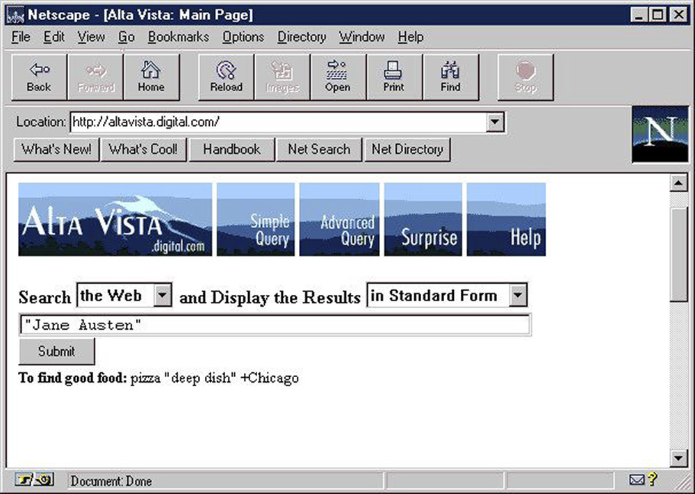

O Museu da História do Computador abriga a maior coleção mundial de artefatos relacionados á história da computação. É uma organização sem fins lucrativos com uma história de quatro décadas como a instituição líder mundial que explora a história da computação e seu impacto continuo na sociedade.
O Digital Computer Museum é aberto no escritório da Digital Equipment Corporation em Marlborough, Massachustts.
1984
O Museu do Computador retira o "Digital" de seu nome e se desloca para o Museu Wharf, no coração de Boston.
1999
O Museu do computador em Boston fecha. Algumas das exposições vão para o Museu de Ciências de Boston. O restante da coleção viaja para o The Computer Museum History Cente em Mountain View na Califórnia.
2000
O Computer Museum History Center é renomeado para Computer History Museum.
O museu preserva materiais que capturam a história da rede, incluindo:
Softwares, dados e sites
Fotografias, filmes e vídeos
Artefatos físicos
Papeis e cartas pessoais e comerciais
A história de rede de computadores apresenta três enredos principais:
Sistemas online (como a Web) a partir da década de 1950.
Redes (a internet), a partir da década de 1950.
"Fios": a infra-estrutura de telecomunicação surgiu em meados do século 19 por conta do telégrafo e do telefone.
Galeria de Imagens
Filho de cientistas da computação, Tim Berners-Lee estudou física em Oxford, mas depois
mudou para a computação. A imensidão de documentos incompatíveis na CERN (Organização Europeia para Pesquisa
nuclear) levou-o a tentar unificá-los usando hipertexto.
O primeiro navegador desenvolvido em 1990 também foi um editor para criar uma "web"
pessoal de documentos vinculados. AltaVista foi o buscador mais popular na web antes do Google. Embora a sua base de
usuários tenha crescido rapidamente, o AltaVista não prosperou.